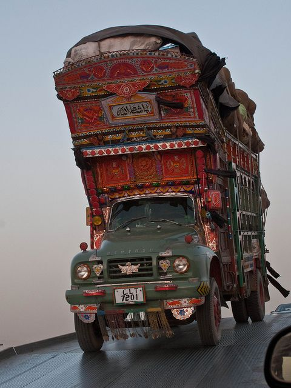
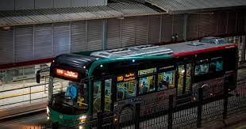
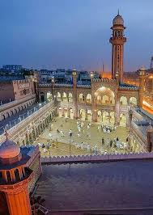

PHOTOGRAPHY
In Afghanistan, truck art has origins
dating back to the 1920s, when Bedford trucks imported from England
invaded the country's streets. They were fitted with large wooden prows on top of the truck bed.
Known as a taj, or crown, the ornate prow was also
accompanied by decorative bumpers and wood paneling along the cabin.
 Launched with the financial support of the Asian Development Bank (ADB)
and Agence Française De Développement (AFD) with an estimated cost of Pakistani Rupee
(PK Rs.)71 billion (US dollar 331.83 million), the new state of the art transport facility is now being used by a record number of 260,000 passengers
on a daily basis including 70,000 women utilising 25 per cent seating quota reserved for them in each bus,
according to TransPeshawar, a government owned company that manages operation of BRT.
The company says that around 4.5 million female passengers have already used the new bus service
introduced with the brand name of `Zu’,
a word of locally spoken Pashto language with meaning `go’.
The number of women travelling in public transport has increased from earlier 2 per cent to 20 per cent
after the introduction of Peshawar Zu service, which reflects
confidence and satisfaction of womenfolk in the new transport service,
claims TransPeshawar.
Unlike the Wazir Khan Mosque and Badshahi Mosque
which were built at the zenith of the Mughal Empire in the 17th century,
the Sunehri Mosque was built in 1753 when the empire was in decline.
The architect of the mosque was Nawab Bukhari Khan, deputy governor of Lahore
during the reign of Muhammad Shah.